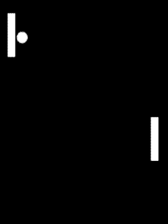

Overview
Students begin creating a game of Pong
Learning Objectives
Evidence Statementes
Product Outcomes
Students create the first stage of a game of Pong, including a game board and two paddles
Students build interactivity into the game, allowing each paddle to be controlled by keypresses.
Materials
Pens/pencils for the students, fresh whiteboard markers for teachers
Class poster (List of rules, language table, course calendar)
Language Table (see below)
Animation Design Worksheet
Preparation
- In Unit 3, you practiced decomposing simple animations into their data structures and functions. Let’s consider how a 2-player game of Pong works: There are two "players", each represented by a paddle on either side of the screen. Each paddle can move up and down, as long as they remain on the screen. There is also a ping-pong ball, which moves at any angle and can be on or off the screen. Let’s start out by adding the paddles, making sure they can move up and down, and then we’ll add the ball later.
Using a blank Animation Design Worksheet, figure out how the paddles behave throughout the game, and decide what Data Structure you’ll need to represent those behaviors.
Students should realize that each paddle is simply a y-coordinate, since neither paddle can ever move left or right.
Here is one possible structure that we could use to model the two players: We can imagine a few sample pongState instances, in which the paddles are at different locations on the screen. If you haven’t already, it would be a good idea to define a sample state for when the game starts, and maybe two other states where the paddles are at other locations.
- We’ll need to answer some questions, in order to write our draw-state function.
What will the paddles look like?
What does the background look like?
How wide is the background? How tall is it?
Define the function draw-state, and try drawing your sample PongState instances to make sure they look the way you expect them to.
- The paddles don’t move on their own, so right now there’s no next-state-tick function. However, they DO move when a user hits a key! That means we’ll need to define next-state-key, and answer a few questions in the process:
What key makes paddle1Y increase? Decrease?
What key makes paddle2Y increase? Decrease?
How much does each paddle move when it goes up or down?
What happens if some other key is pressed?
Use the Design Recipe to write the code for next-state-key
Have students discuss their answers to these questions, before moving on to next-state-key.
At this point, we know how to change the pongState in response to a keypress and how to draw that pongState as an image. Let’s build a reactor, which uses a pongState instance as the starting state and hooks up these functions to the on-key and to-draw event handlers. When you run this reactor with interact(pong-react), you should see your initial instance drawn on the screen, and the paddle positions should change based on the keys you press! Do all four keys do what you expect them to do? What happens if you hit some other key?
- Right now, what happens if you keep moving one of the paddles up or down? Will it go off the edge of the screen? We should prevent that!
Take a few minutes and discuss with your partner: what needs to change to stop the paddles from going offscreen? You can use an Animation Design Worksheet if you want to be precise. Once you have a strategy that you feel confident about, take 15 minutes to try it out!
Give the class 2-3 minutes to discuss, and then have different teams share back before they start to implement.